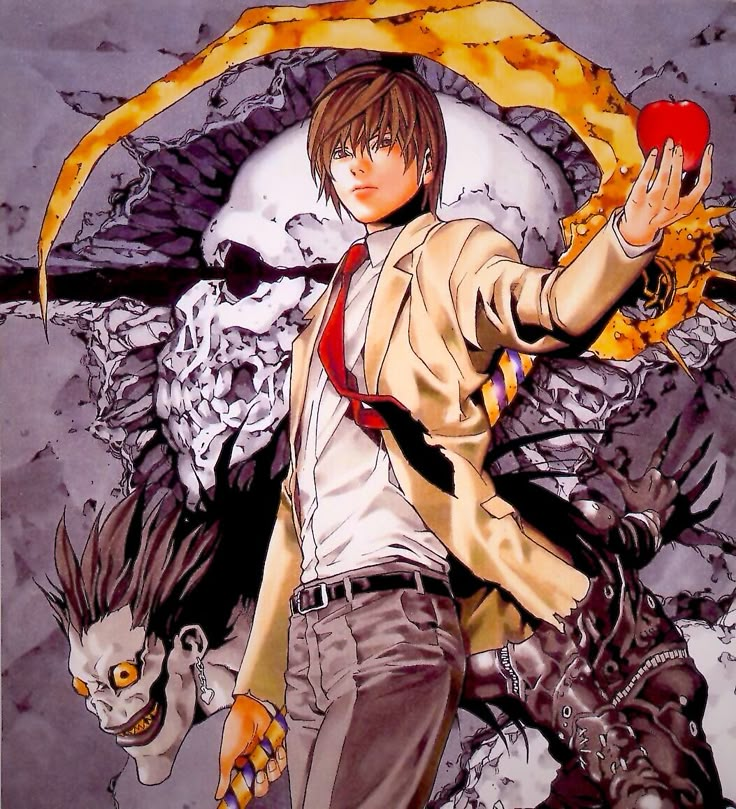

KIRA
1800-???
Welcome to my silence. You have walked through the digital veil... into my world.

Can you feel the weight of centuries? The moon is the only witness that never lies.

Don't look away.
The moment you blink...
I disappear.
— RYE —